某天閒得發慌，就騎著"歐都邁"戴摩卡卡一起去冒險!哈哈
其實就是亂鑽一些我們沒去過的巷子小路啦！對自己住的地方還真不熟啊！
結果居然真的讓我們挖到寶啦！.gif") WOW CAFE'
WOW CAFE'
WOW CAFE'的取名源自於他們的店狗黃金獵犬wagon的叫聲！
不過店狗只有假日會去，那天我們平日去當然是遇不到他嘍！

入內前門口照，整間店面的設計風格很簡約，舒服的感覺！
室外的等候區也不小，騎單車或機車的朋友可停放此區。
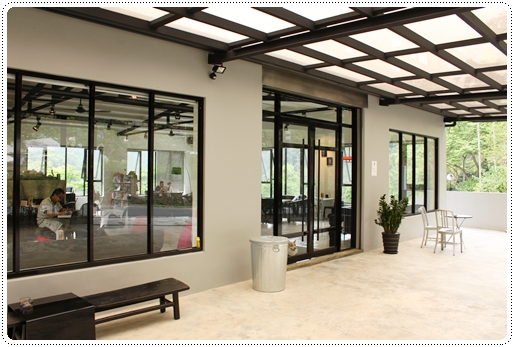
進入店內後的右半邊，整個空間真的是夠大夠寬敞，採光極佳！
很適合拍照完全不用打閃光，怎麼拍都好看！.gif")

店內的左半邊，有小小的廚房吧檯區！
而且它的座位並沒有擺的很密，更顯得空間超大，很適合狗聚啊！.gif")
也提供無線上網跟雜誌，太合我味了！

我們選了靠近門口的位子，當天只有我們一家三口跟一組外國客人
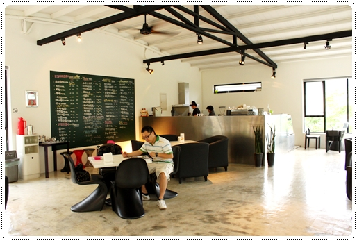
靠近角落的沙發區，不過沙發是硬的那種，
我好愛５這個設計家飾~下次要問問能不能搬出來拍拍照!哈哈

沙發是硬的有個好處，就是不怕狗毛沾上！.gif")
不然清理起來也是頗麻煩！
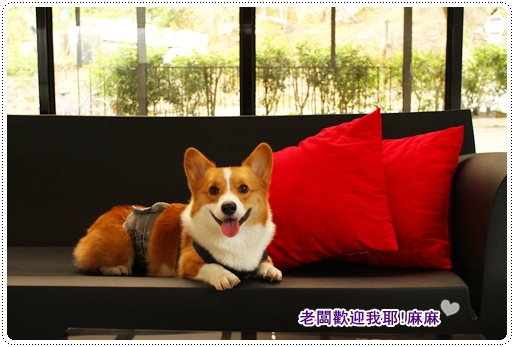
牆上的大黑板寫滿滿店內的餐點，不過這裡的消費還蠻親民的！
除了義大利麵$250之外，其他飲品、三明治、點心類的大概$100-150元
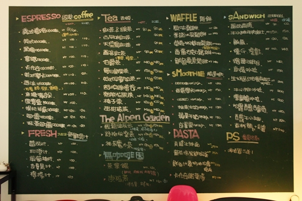
吧檯上的小玩意兒，另外開水也可以自行取用

雜誌區，旁邊還有一隻老闆撿到的木馬！
去那撿這種東西啊！？.gif")
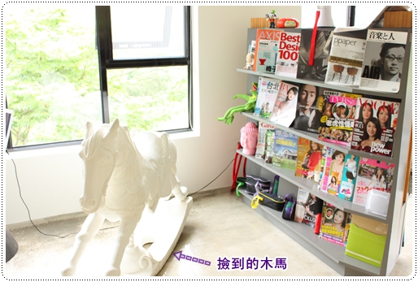
等餐點的同時跑去外面亂拍，摩卡卡在大門下偷看好小一丁點！XD
洗手間在室外，馬路旁有個小小的停車場，大概能停個三、四台車
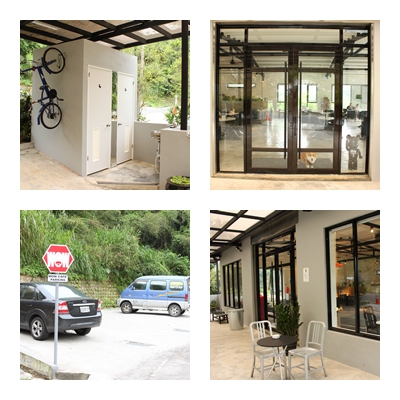
拔拔點了一份牛小排三明治，牛小排好嫩好好吃，份量也還蠻大的！
而且才$150真的超划算的！CP值很高

在腳邊苦等的摩卡卡也分得一塊牛肉吃吃！

焦糖瑪琪朵（$110)
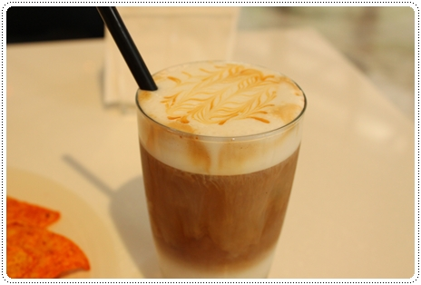
拿鐵咖啡（$110)

延著旁邊樓梯下來，就到戶外的草坪區
也可以看到整棟建築物，二樓是用餐區，一樓其實是老闆住的地方！

不過就我預估目前大概只整理好三分之一左右吧！
而且草坪的空間現在並沒有完全封閉起來，地上也還有些尖尖小碎石，
如果帶狗狗去的話還是要小心看好他們！
因為老闆只有跟他爸媽一起慢慢的整埋，所以還需要一些時間才能完成！
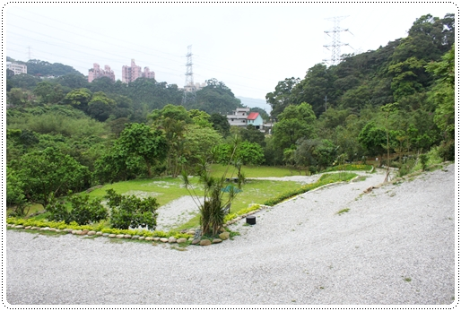
法式滾球我之前玩過一次還蠻好玩的！哈哈 想玩的可以跟老闆借球
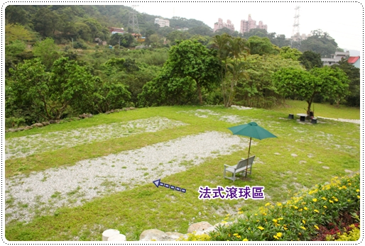
往後延伸還有一大片空地也是屬於他們的，
我說這裡真的很適合帶狗狗來玩，不僅有室內區還有室外草坪可以跑跑！
整個環境如果整理好一定很棒，真的很希望大草坪可以快快完成！
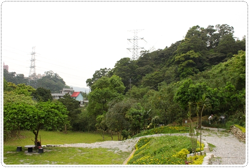
大小籃球框架，父子檔愛死了！拿到球就停不下來，玩很久！.gif")
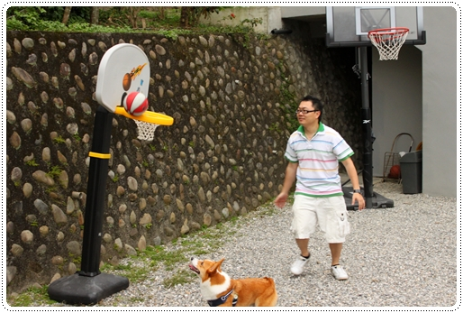
當爹的都很嚮往跟兒子一起打籃球！哈哈哈
不過小籃球對卡卡來說還是太大了啦！咬不動還會生氣

哇屋～拔拔跳好高！
但其實仔細看，也不過跳的跟摩卡卡一樣高而已！

突然很想訓練摩卡卡投籃
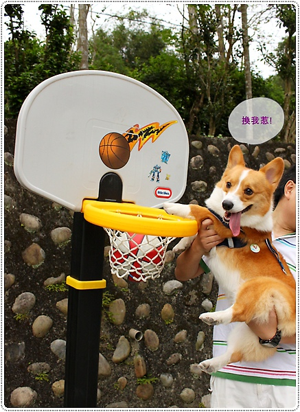
摩卡卡超嗨的，今天算是包場了！
一個人也可以不停的來回狂奔！體力真的不是蓋的！

好可口的嗨嗨大舌頭！
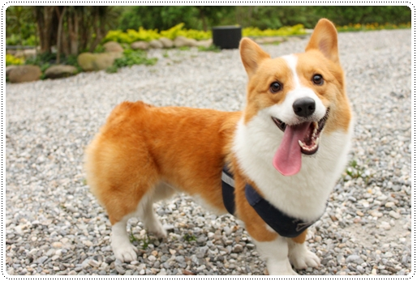
摩卡卡突然發現一個可疑人物，就出現在老闆一樓住家的門口
聞一聞發現這位阿姨頭很久沒洗惹......... 臭臭的!

我想來想去覺得老闆會放這顆琥姨的頭在這，除了避邪之外，
我想不到還有什麼功用了！哈哈哈

拔拔扛摩卡小山豬從小樓梯上去，稍作休息！

在洗手間旁還養了一隻烏龜，居然也是老闆撿到的！
我說老闆你平日都在那出沒啊?怎嘛可以一直撿到奇怪的東西～XDDDD

卡卡與龜龜初次見面，身體拉很長偷聞龜龜，完全不敢靠太近！
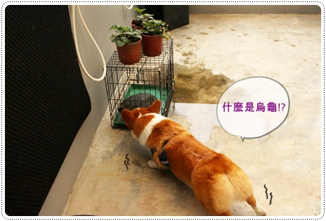
回到室內，許摩卡整個當自己家啊！大剌剌的橫躺在路中央
這種會冰冰涼涼的地板他最喜歡惹！ 以後我們會很常很常來的！
以後我們會很常很常來的！

WOW CAFE'開了有半年之久了，
完全沒發現的原因就是路口這塊松柏墓園的大招牌啦！
我許某人天不怕地不怕就只怕-->阿飄，
所以每當看到那塊扛棒我就完全不想騎上去！哈哈
而且WOW CAFE'的招牌礙於某些因素也只能放個小小一塊，不顯眼！
所以要來的朋友，看到招牌就可以右轉上去大概三百公尺左右就到嘍！

我個人覺得來深坑除了老街吃吃豆腐之外，真的不能幹嘛了！哈哈哈
難得深坑有這種好地方，推薦給大家！
帶狗狗去的主人們，希望你們都能發揮公德心，請主動清理自家小狗的排泄物
不要造成店家的困擾，不然以後都沒有狗狗能去的地方了啦！
養小男生(公狗)的捧油也很推廌使用禮貌帶！
我們摩卡卡去室內一定會包尿布 超帥的！

訂位電話: (02)2662-4924
地址: 台北縣深坑鄉昇高坑路30號
網
址: http://www.wretch.cc/blog/mimikotim
提供無限上網